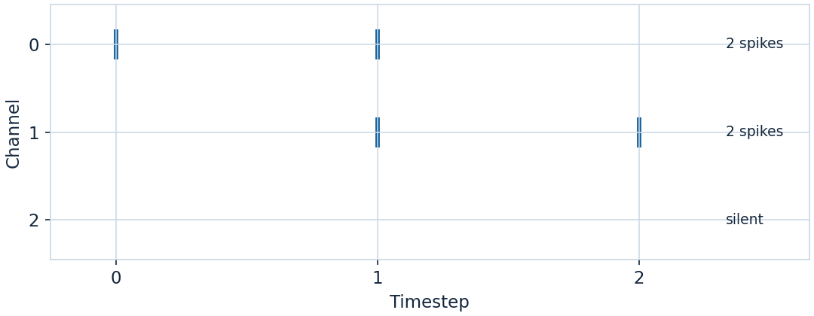
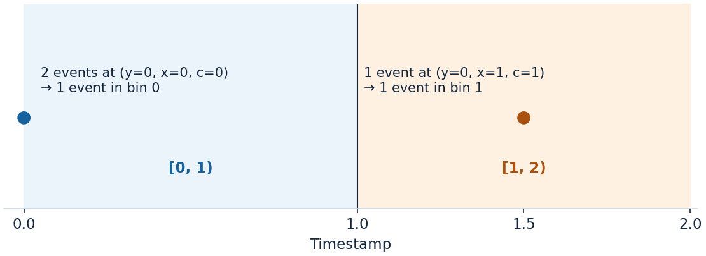
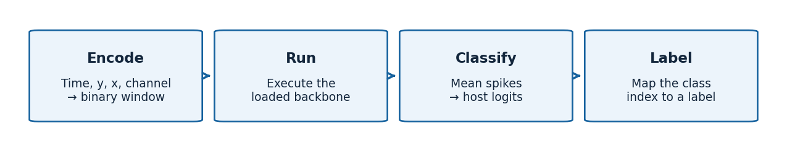

Readouts and application bundles#
Readouts reduce terminal spike records on the host. Supply the declared output channel count and timestep count so the result includes silent channels. See host heads and readout parameters.
Reduce a spike window#
The following synthetic window has three timesteps, three channels, and two
spatial positions. Bit 0 of a record’s mask is channel 0 and bit 1 is channel 1.
Channel 2 is silent. The two positions use addresses 10 and 11. These records
can also be supplied as the spikes field of a runtime result.
from spikepress import readout
records = [
dict(timestep=0, global_address=10, group=0, mask=0b001),
dict(timestep=1, global_address=11, group=0, mask=0b011),
dict(timestep=2, global_address=10, group=0, mask=0b010),
]
window = dict(channels=3, timesteps=3)

Spatial counts are combined per channel. The horizontal axis uses zero-based timestep indices.#
- spike_count(output, *, channels, timesteps)#
Count spikes per output channel across the entire window.
assert readout.spike_count(records, **window) == (2, 2, 0)
- spike_rate(output, *, channels, timesteps)#
Return per-channel count divided by the fixed timestep count.
assert readout.spike_rate(records, **window) == (2 / 3, 2 / 3, 0.)
The event rate divides by three timesteps, so a channel can exceed 1 if it fires at multiple positions in the same step.
- first_spike(output, *, channels, timesteps)#
Return first timestep per channel, or None for a silent channel.
assert readout.first_spike(records, **window) == (0, 1, None)
- population_count(output, *, classes, timesteps)#
Sum channel spike counts under an explicit channel-to-class map.
Assign channels 0 and 1 to class 0, and silent channel 2 to class 1.
assert readout.population_count(records, classes=[0, 0, 1], timesteps=3) == (4, 0)
- global_average(output, *, timesteps, output_shape_hwc, state_base, state_limit)#
Host mean over time and space, preserving the terminal channel axis.
The time-and-space mean divides each count by six opportunities, three steps times two positions. Shape and state address bounds describe the terminal layer. The upper bound is exclusive.
import numpy as np
geometry = dict(timesteps=3, output_shape_hwc=(1, 2, 3),
state_base=10, state_limit=12)
features = readout.global_average(records, **geometry)
np.testing.assert_allclose(features, [1 / 3, 1 / 3, 0])
- linear(output, weight, bias=None, *, timesteps, output_shape_hwc, state_base, state_limit)#
Apply a host classifier once to time/spatial mean terminal spikes.
Each row of the weight matrix scores one class. The example gives class 0 a positive weight on both firing channels.
weight = [[1., 1., 0.], [-1., 0., 0.]]
bias = [0., 0.]
logits = readout.linear(records, weight, bias, **geometry)
np.testing.assert_allclose(logits, [2 / 3, -1 / 3])
assert int(np.argmax(logits)) == 0
- class Classifier(head)#
Owned deployed linear head; native execution avoids dense spike tensors.
Wrap the same weights to request mean features and logits directly from a
compatible Board.run. Use the actual terminal channel count for your model.
classifier = readout.Classifier({"weight": weight, "bias": bias, "mode": "mean"})
# Board only. board is connected and has a compatible three-channel package loaded.
result = board.run(events, readout=classifier)
label_index = int(np.argmax(result["logits"]))
Encode events and export an application#
This CPU example puts three raw events into a two-bin, one-row window. Two identical events merge into one event at timestep 0. Event times share the unit used by the preprocessing window.
- encode_events(events, preprocessing, *, native_library=None)#
C binning: [time,y,x,channel] to binary [1,T,C,H,W], no dropped events.
Times use the caller’s explicit unit and [start,end) window. Duplicate events in one bin use binary OR. Missing native code raises; no fallback.
import numpy as np
import torch
import spikepress
from spikepress.nn import Conv2d
from spikepress.sparse_event_training import SparseEventTrainingPreset
preprocessing = dict(encoding="uniform_binary_or", window_start=0,
window_end=2, timesteps=2, shape_hwc=[1, 2, 8])
raw_events = np.array([[0.0, 0, 0, 0], [0.0, 0, 0, 0], [1.5, 0, 1, 1]])
encoded = spikepress.encode_events(raw_events, preprocessing)
assert encoded.shape == (1, 2, 8, 1, 2) # B,T,C,H,W
assert np.argwhere(encoded).tolist() == [[0, 0, 0, 0, 0], [0, 1, 1, 0, 1]]

Each point carries a position and channel. Duplicate events within a bin merge by OR.#
- export_deployment(artifact, destination, *, head_weight, head_bias, labels, preprocessing, reduction='mean', time_bins=None, grid=None, temporal_weights=None)#
Bundle an existing .spm and explicit mean head in a fresh directory.
manifest.json is written last; an incomplete directory is not an export. Hashes establish consistency, not authenticity or hardware attestation.
- class Deployment(directory, *, native_library=None)#
Verified application assets; C event binning and raw-frame classification.
- encode(events)#
- load(board)#
Explicitly load this admitted snapshot through the existing Board API.
This performs hardware I/O on a real board and needs that operation’s authority. It never retries or clears a faulted session.
- run(board, events, *, window_tag=None, postprocess=None, top_k=None)#
Run raw events with the existing C readout on an explicitly loaded Board.
- classify(words, *, window_tag, postprocess=None, top_k=None)#
Validate a complete raw v12 event frame and run its host head in C.
The caller binds capture/build/session origin. A hashless frame checks host context only; neither frame form attests which hardware was run.
- report()#
Export into a directory that does not yet exist. The bundle binds input encoding, the saved package, and a host head with labels. This identity backbone and head use synthetic weights.
from pathlib import Path
from tempfile import TemporaryDirectory
model = Conv2d(8, 8, kernel_size=1,
preset=SparseEventTrainingPreset(timesteps=2)).eval()
with torch.no_grad():
model.weight.copy_(torch.eye(8)[:, :, None, None])
model.threshold.fill_(1)
example = torch.from_numpy(encoded).float()
compiled = spikepress.compile(torch.nn.Sequential(model).eval(), example)
with TemporaryDirectory() as workspace:
directory = Path(workspace)
artifact = spikepress.save(compiled, directory / "model.spm")
destination = directory / "app"
spikepress.export_deployment(
artifact, destination, head_weight=[[1.] * 8, [-1.] * 8],
head_bias=[0., 0.], labels=["active", "inactive"],
preprocessing=preprocessing,
)
app = spikepress.Deployment(destination)
np.testing.assert_array_equal(app.encode(raw_events), encoded)
assert app.report()["labels"] == ["active", "inactive"]

The application binds preprocessing, model and head to the same input and output geometry.#
Run an exported bundle on a board#
For a persistent, target-matched bundle, follow the export procedure in
application deployment. Load the application before running
it. top_k ranks the host scores, and softmax is optional.
import numpy as np
import spikepress
app = spikepress.Deployment("runs/first-app/application")
raw_events = np.load("runs/first-app/raw_events.npy", allow_pickle=False)
with spikepress.connect(bitstream="bitstreams/pynq-z2/spikemold.bit",
unmeasured_inference=True) as board:
app.load(board)
result = app.run(board, raw_events, window_tag=17, postprocess="softmax", top_k=1)
print(result["top_k"][0]["label"])
Classify a captured frame#
Use the same application and window tag as the original capture. Save the complete raw result frame as a one-dimensional uint32 NumPy file. This example consumes those raw words and runs the host head offline.
import numpy as np
from spikepress import Deployment
app = Deployment("runs/first-app/application")
words = np.load("frame-17.npy", allow_pickle=False)
result = app.classify(words, window_tag=17, top_k=1)
print(result["label"], result["logits"])